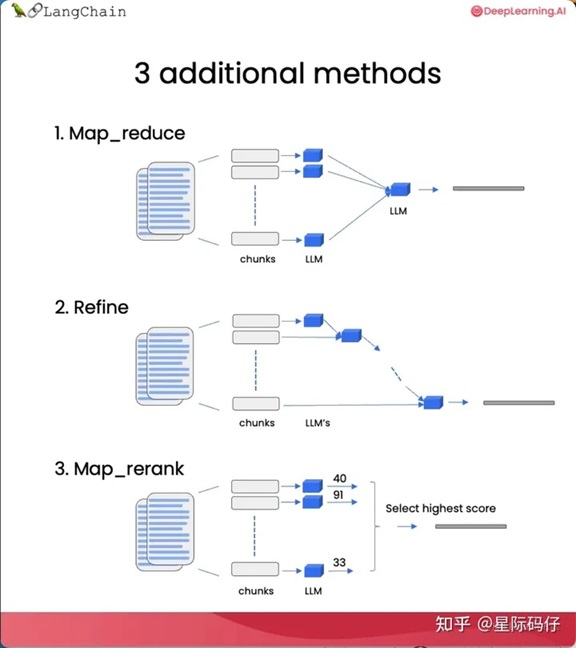

Modules #
main modules #
Model I/O #
- Language models [10]
- LLM
- Chat Model
- Embedding
- Prompts
- Prompt Template
- Few-shot example
- Example Selectors [类比选择] 关键字 相似度 长度
- Output parsers
- function call[2]
Retrieval #
- Document Loaders
- Text Splitters
- Retrievers[10]
- VectorStores
- index
Agent #
- Plan-and-execute agents
Additional modules #
Chains #
- 2大类
- Chain interface[Legacy]
- LangChain Expression Language (LCEL) LCEL is a declarative way to compose chains.
- Foundational
- LLM
- Sequential- SequentialChain
- Router
- Transformation
Memory [10] #
- 帮语言模型补充上下文
- ConversationBufferMemory
- ConversationBufferWindowMemory 窗口
- ConversationSummaryMemory
- VectorStoreRetrieverMemory
Function Call #
from langchain.chains.openai_functions.base import (
create_openai_fn_chain,
create_structured_output_chain,[2]
)
from langchain.chains.openai_functions.citation_fuzzy_match import (
create_citation_fuzzy_match_chain,
)
from langchain.chains.openai_functions.extraction import (
create_extraction_chain,
create_extraction_chain_pydantic,
)
from langchain.chains.openai_functions.qa_with_structure import (
create_qa_with_sources_chain,
create_qa_with_structure_chain,
)
from langchain.chains.openai_functions.tagging import (
create_tagging_chain,
create_tagging_chain_pydantic,
)
应用[4] #
- Question & Answering Using Documents As Context[3]
- Extraction[Kor]
- Evaluation
- Querying Tabular Data[sqlite]
- Code Understanding
- Interacting with APIs
- Chatbots
Chains [1] [8][9] #
chain = load_summarize_chain(llm, chain_type="stuff", verbose=True)
chain = load_summarize_chain(llm, chain_type="map_reduce", verbose=True)
chain = load_summarize_chain(llm, chain_type="refine", verbose=True)
chain = load_qa_chain(llm, chain_type="map_rerank", verbose=True, return_intermediate_steps=True)
| 链类型 | 整合方法 | 优缺点 |
|---|---|---|
| stuff | 将所有内容放入一个提示中，输入LLM | 简单、廉价、效果好/ 对输入文本有一定token限制 |
| Map_reduce | 每个问题和文本块单独给语言模型，并将答案汇总生成最终结果 | 输入任意数量文本，且并行处理/ 速度慢，费token |
| Refine | 迭代处理多个文本，基于前一个文档答案构建下一个答案 | 用于组合信息，依次构建答案/ 速度慢，费token |
| Map_rerank | 每个文档单独调用LLM,并要求返回一个得分，然后选择最高的得分 | 需要告诉模型评分的规则/ 费token |
